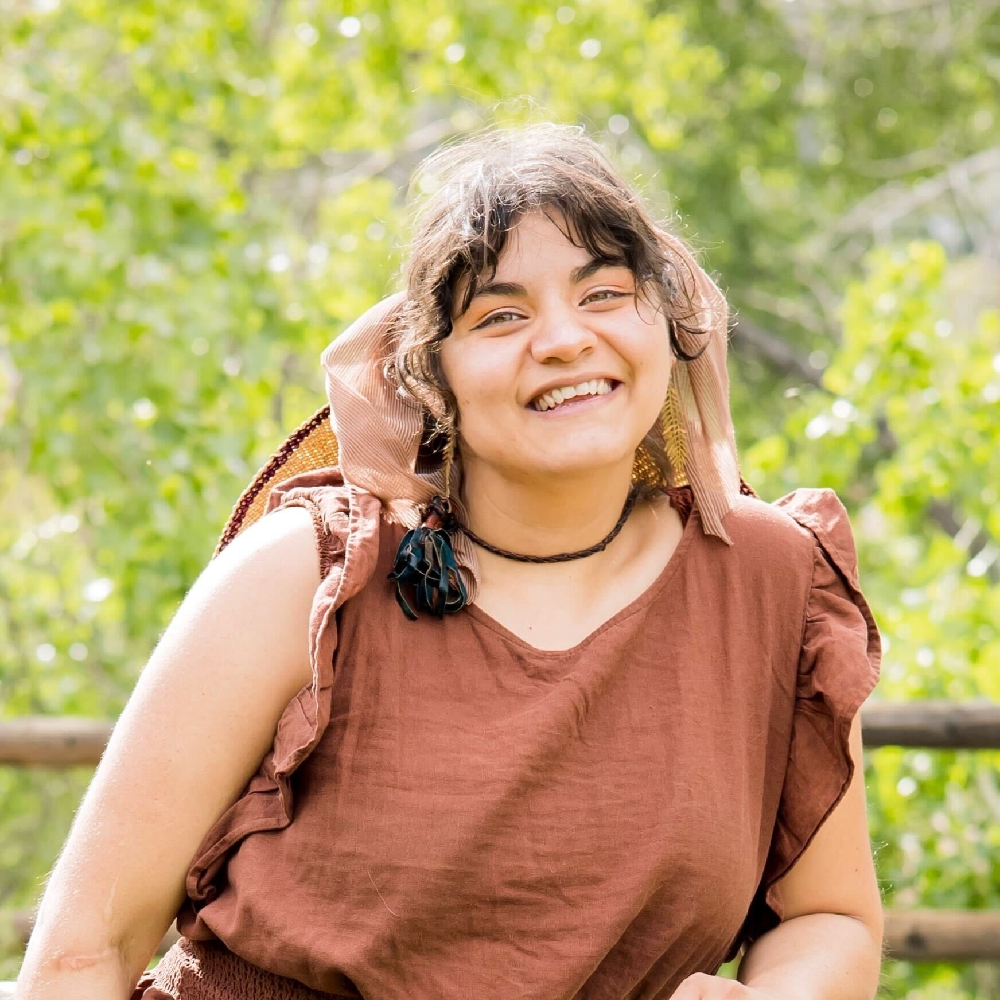

About Griselda
Griselda earned her B.S. degree in Wildlife & Conservation Biology with a minor in Ethnic Studies. She has worked for the National Park Service in Alaska and Florida, the U.S. Fish & Wildlife Service in Oregon, and Environment for the Americas, a non-profit based in Boulder, CO. Most recently, she served as a Water & Land Steward with Colorado Open Lands. Currently pursuing her M.S. at Colorado State University, Griselda's research focuses on community-based ecological restoration that is guided by Indigenous Ecological Knowledges (IEKs). As a member of the Indigenous Land & Data Stewards Lab at CSU, she is passionate about developing ecological restoration and land stewardship strategies that honor Indigenous relationships to land and promote resilience in both ecosystems and communities. Griselda's personal interest and connection to these topics is rooted in her family's heritage. Her parents are from rural Michoacán, Mexico, along the southernmost migration route of the Monarch butterflies, and she is partially descended from the Purépecha people. These experiences inspire her dedication to collaborating with Indigenous communities. In addition to her academic pursuits, Griselda is an active member of her community and serves on the board of Colorado's CAL-Wood Education Center. When she's not in the office or the field, she enjoys making jewelry, rock climbing, cycling, and exploring Colorado's beautiful outdoors. She is also a big fan of science fiction and fantasy novels.